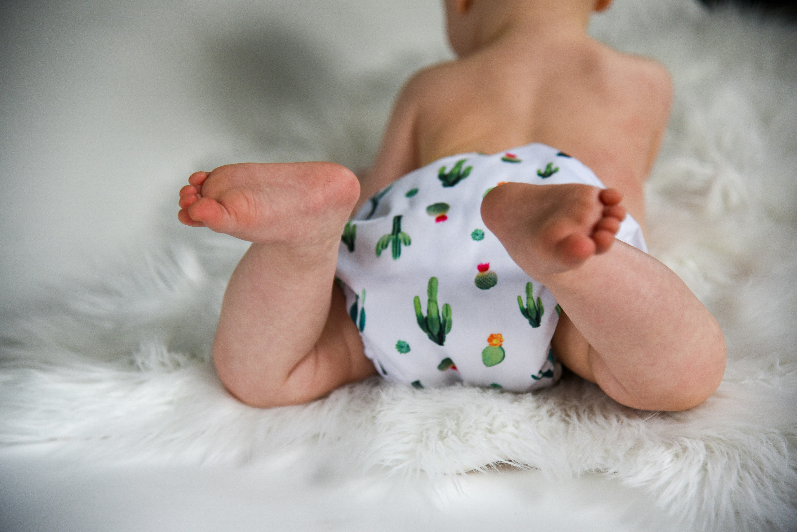

 Baby Diaper Rash
Oh, diaper rash—the little red mystery that gets every parent at some point! If you’re seeing some redness, especially in the summer when our tiny ones sweat faster than you can say “ice cream truck,” you’re definitely not alone.
Some babies don’t even bat an eye, but others can make a *very* big fuss (and yes, sometimes it’s just as dramatic as that wrestling match you have at every diaper change). Don’t stress! A few tried-and-true tricks can make a big difference:
1. Change diapers regularly: Aim for every 3–4 hours, and definitely after every poop (yes, even if it’s nap time and you’re tip-toeing like a ninja).
2. Skip wet wipes after poop: Even if the packet claims “100% water and natural,” nothing beats lukewarm water for gentle cleaning. Soak a soft cotton cloth or baby sponge, give the area a careful wash, and pat dry with another clean cotton cloth. No need to go fancy—a clean washcloth is the gold standard!
3. Let that bottom breathe: If the weather’s warm, let your baby have a little “no diaper” time (tummy time with extra towels is a life-saver). You’ll be surprised how much those cute little “airdries” can help!
And remember—every mom has a diaper rash story. So don’t worry and keep a sense of humor; even the best of us have had to chase a suddenly-naked, giggling baby across the living room at bath time!
(Stay tuned—I’ll be sharing more soothing solutions and natural gentle creams very soon.)